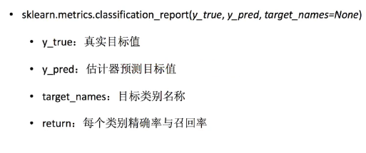

一、K-近邻法
sklearn.neighbors.KNeighborsClassifier(n_neighbors=5,algorithm='auto')
n_neighbors:int，可选（默认5），邻居数
algorithm:{'auto','ball_tree','kd_tree','brute'},用于计算最近邻居的算法
处理数据
(x,y,time,place_id)
data = pd.read_csv(" ")
1.缩小数据
data = data.query("x>1.0 & x<1.25 & y>2.5 & y<2.75") #缩小数据集范围
2.处理时间的数据
time_value = pd.to_datatime(data['time'], unit='s') #把时间戳转换为年月日时分秒
3.构建一些特征
time_value = pd.DatetimeIndex(time_value) #把日期格式转换成 字典格式
data['day'] = time_value.day
data['hour'] = time_value.hour
4.删除时间戳特征
data = data.drop(['time'],axis=1)
5.把数量少于n个目标位置删除
place_count = data.groupby('place_id').count()
tf = place_count[place_count.row_id>3].reset_index()
data = data[data['place_id'].isin(tf.place_id)]
6.取出数据中的特征值和目标值
y = data['place_id']
x = data.drop(['place_id'], axis = 1)
7.进行数据的分割
train_test_split( x,y,test_size=0.25 )
8.特征工程（标准化）
std = StandardScaler()
x_train = std.fit_transform(x_train)
x_test = std.transform(x_test)
9.算法
knn = KNeighborsClassifier(n_neighbors=5)
knn.fit(x_train,y_train)
y_predict = knn.predict(x_test)
二、朴素贝叶斯算法
sklearn.naive_bayes.MultinomialNB(alpha=1.0)
alpha：拉普拉斯平滑系数
x_train,x_test进行tf-idf再训练
mlt = MultinomialNB(alpha=1.0)
mlt.fit(x_train,y_train)
mlt.predict(x_test)
精确率和召回率
sklearn.metrics.classification_report

交叉验证与网格搜索
超参数搜索-网格搜索
超参数采用交叉验证来进行评估
sklearn.model_selection.GridSearchCV


三、决策树
信息熵：表示不确定性，当信息变多时，熵值会减少
决策树：当知道什么信息，不确定性减少最多时，就把这个条件放在决策树最上面
信息增益：（决策树的分类依据之一）
特征A对训练数据集D的信息增益g(D,A),定义为集合D的信息熵H(D)与特征A给定
条件下D的信息条件熵H(D|A)之差。
g(D,A)=H(D)-H(D|A)
注：信息增益表示得知特征X的信息而使得类Y的信息的不确定性减少的程度

例题


决策树的结构、本地保存
sklearn.tree.export_graphviz() 导出DOT格式
tree.export_graphviz(estimator,out_file='tree.dot',feature_names=[","])
工具：将dot文件转换为pdf、png
安装：ubuntu:sudo apt-get install graphviz
运行：dot -Tpng tree.dot -o tree.png
随机森林

定义：
在机器学习中，随机森林是一个包含多个决策树的分类器，并且其输出的
类别是由个别数输出的类别的众数而定。